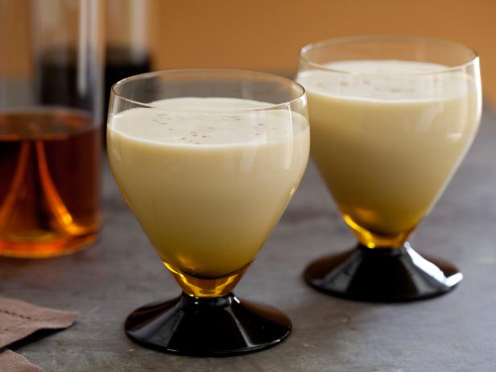

The Best Damn Eggnog

Description
It's taken me several years to perfect this homemade eggnog recipe. Now everyone asks, 'When are you making the eggnog?!' This uses cooked eggs for safety, and you can use more or less rum to taste. It's a bit of work to make, but well worth it. You'll never buy store-bought eggnog again! Enjoy!
Ingredients:
- 4 cups milk
- 5 whole cloves
- 1/2 teaspoon vanilla extract
- 1 teaspoon ground cinnamon
- 12 egg yolks
- 1 1/2 cups sugar
- 2 1/2 cups light rum
- 4 cups light cream
- 2 teaspoons vanilla extract
- 1/2 teaspoon ground nutmeg
Steps
- Combine milk, cloves, 1/2 teaspoon vanilla and cinnamon in a saucepan. Heat over lowest setting for 5 mins. Slowly bring milk mixture to a boil.
- In a large bowl, combine egg yolks and sugar. Whisk together until fluffy. Whisk hot milk mixture slowly into the eggs. Pour mixture into saucepan. Cook over medium heat, stirring constantly for 3 mins or until thick. Do not allow mixture to boil. Strain to remove cloves and let cool for about 1 hour.
- Stir in rum, cream, 2 teaspoon vanilla and nutmeg. Refrigerate for 8 hours or overnight before serving.
And that's it! Enjoy your amazing eggnog and try not to get too drunk.